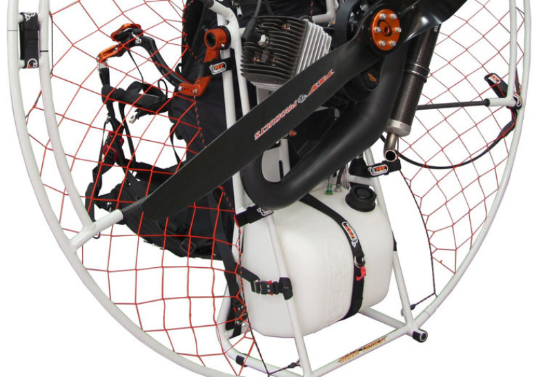

Dai un occhiata alla nostra attrezzatura
MOTORE
Semplici MOTORI a due tempi, preferiti per il miglior rapporto potenza/peso e di facile manutenzione, con cilindrate che generalmente variano da 80 a 250 cc., in grado di esprimere potenze dai 13 ai 30 hp. Abbinati ad un'elica dal diametro tra i 60 ed i 130 cm, la spinta statica è compresa tra i 30 e gli 80 kg. I consumi sono ridottissimi (si attestano tra 3-5 litri l'ora), e garantiscono una autonomia di volo anche di 3 ore e la possibilità di effettuare voli superiori ai 100 km.
TELAIO
Il motore, con relativa elica propulsiva, è alloggiato su di un TELAIO che è collocato a mo' di zaino sulle spalle del pilota. I telai sono leggerissimi e completamente smontabili: una volta arrivati al campo, in dieci minuti si è pronti al volo!
VELA
Le VELE sono incredibilmente performanti e oggi permettono una velocitá di crociera di circa 50 km/h in massima sicurezza.
IMBRAGO / SELLETTA

Classica imbragatura in dotazione
COMANDI
I volo è condotto con due comandi (dx & sx) per il cambio di direzione e un acceleratore per aumentare la quota. I decolli e gli atterraggi avvengono in SPAZI RIDOTTISSIMI Il volo risulta essere non impegnativo e dà la possibilità di godersi il mondo, i colori, i profumi in massima sicurezza alla portata di tutti.
PARACARRELLO / TRIKE
Una variante del paramotore, chiamata Paracarrello o Trike, è dotata di ruote che sostituiscono la necessità di correre a piedi, a scapito però della semplicità costruttiva, della trasportabilità e della leggerezza. Può essere monoposto o biposto.